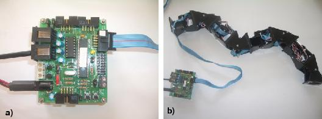

Next: 4 Control approach Up: 3 An overview of Previous: 1 Mechanics


Next: 4
Control approach Up:
3
An overview of Previous:
1
Mechanics
The electronic and power supply are located off-board. Y1 modules have been designed for fast prototyping and for the study of the locomotion capabilities of the modular robots. All the locomotion algorithms are executed on a PC that communicates with the electronics by RS-232 connection.
The hardware comprises a small
board based on the 8-bit PIC16F876 microcontroller (Fig.
 ).
It is in charge of generating the pulse width modulation (PWM)
signals that position the servos. Software in the PC send the desired
position of the servos to the control board where the PWM signals are
generated. The control is in open loop. There is no feedback from the
servos.
).
It is in charge of generating the pulse width modulation (PWM)
signals that position the servos. Software in the PC send the desired
position of the servos to the control board where the PWM signals are
generated. The control is in open loop. There is no feedback from the
servos.
|
 |
|
Figure: a) the PIC16F876 based controller used . b) The electronic is connected to the robot by a cable. |